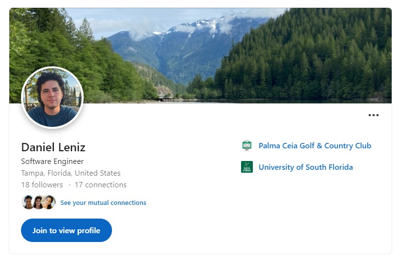

Daniel Leniz
Hi, I'm Daniel, an aspiring software engineer with a passion for learning new technologies.

Projects

LinkedIn Profile Scraper
Enhanced a single-page web scraper for a staffing agency, designed as a Chrome extension.
If a recruiter found a potential candidate on LinkedIn, a form would populate with the candidate's
name, city, state and zip, email address, LinkedIn URL. Experiences, education, and skills are formatted into a resume.
This information would then be imported and stored into a SQL database. Calls an API to extract pertinent information from user profiles.
Social Media App
A full stack application with a style similar to twitter.com. Made with the MERN stack and user authentication.
Weather App
Configured API integration to fetch current weather data while leveraging the power of React.js.
Utilizes a CI/CD pipeline with AWS CodePipeline and stored in Amazon S3.
 Personal Website
Personal Website
This very website! Leveraging DynamoDB, APIGateway, custom domain, and HTTPS
security while implementing serverless functions in Python.
Resource management with Terraform and Github Actions.